Коммуникационные технологии
Цели
- Рассмотреть основные понятия компьютерной сети
- Формировать понятия Протоколы обмена данными и адресация в сети
Инструменты:
- ОС Windows
- Браузер
Коммуникационные технологии
Задание 1. Запустите редактор презентаций Microsoft PowerPoint
Задание 2. На первом слайде запишите тему занятия, ФИО и группу
Задание 3. Оформите второй слайд
| 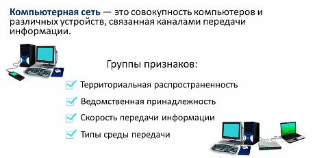 |
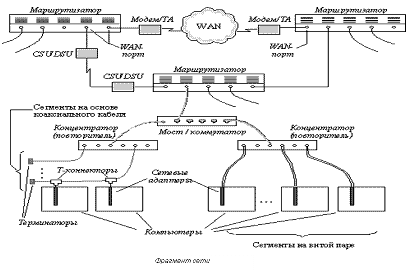 |
Задание 4. На последующих слайдах добавляйте объекты SmartArt по своему усмотрению
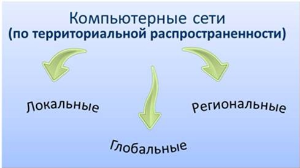 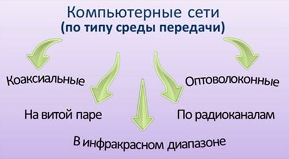 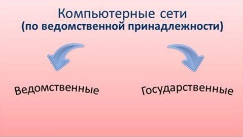 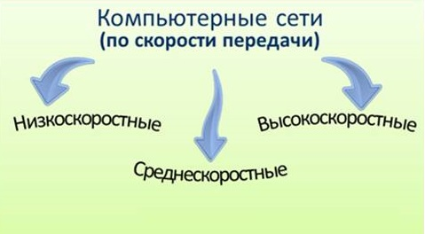 |
Дополнительный материал 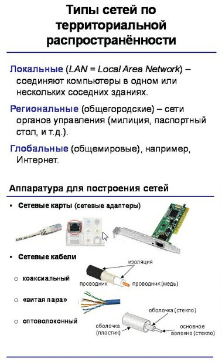 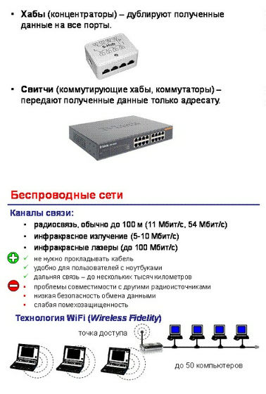 |
Задание 5. На следующих слайдах создайте схемы одноранговой сети и сети с выделенным сервером
| 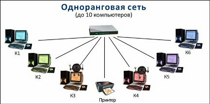 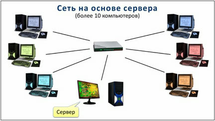 |
Дополнительный материал 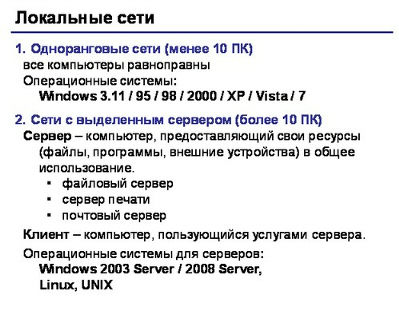 |
Задание 6. На следующем слайде запишите, что такое топология сети и создайте схемы трёх основных топологий
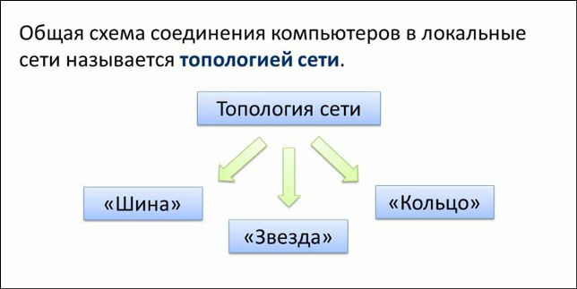
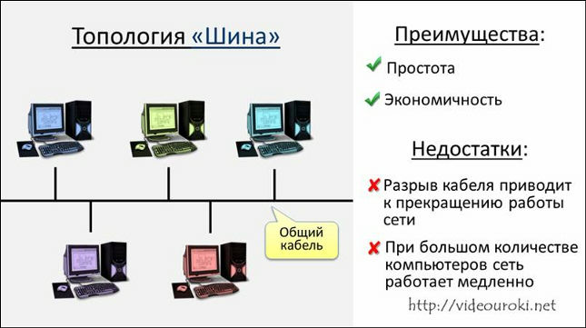
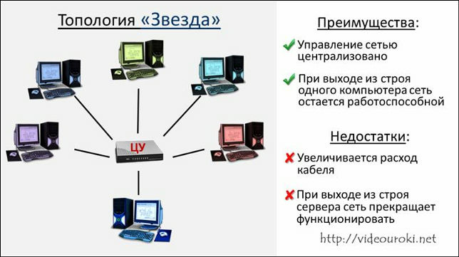
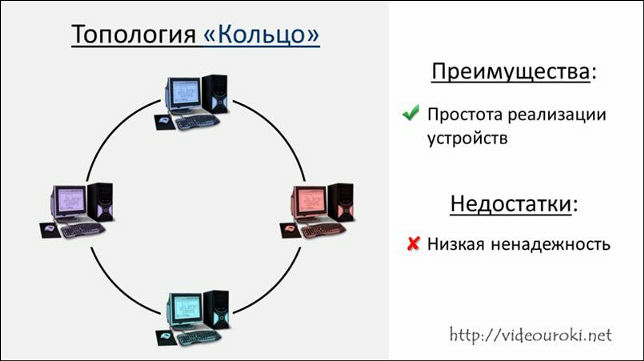
Задание 7. На следующем слайде запишите, что такое Internet
| 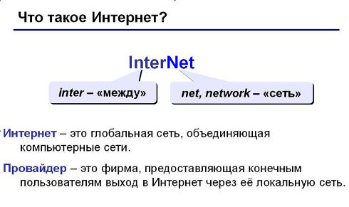 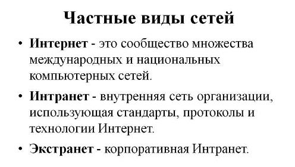 |
Дополнительный материал 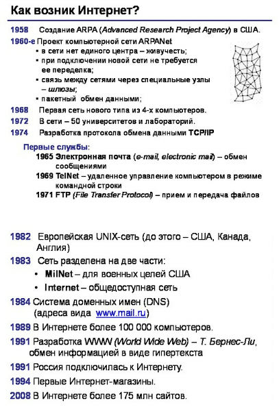 |
Задание 8. На следующем слайде запишите, что такое протокол сети и дополните схему названиями основных протоколов
 |
Дополнительный материал |
Задание 9. На следующем слайде укажите:
что определяют перечисленные в схеме адреса;
из чего они состоят;
приведите примеры каждого адреса с пояснениями.
| 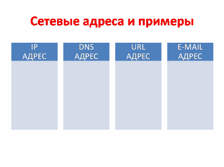 |
Дополнительный материал      |
Задание 10. На следующем слайде перечислите сервисы сети Internet
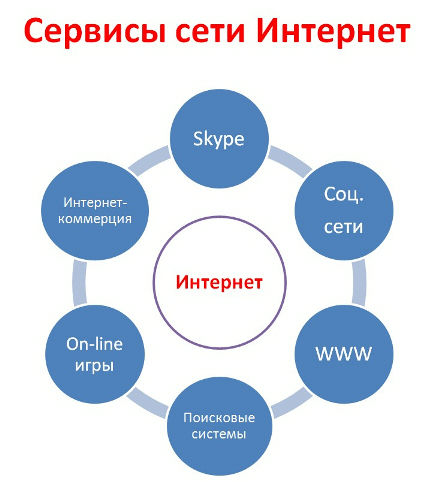 |
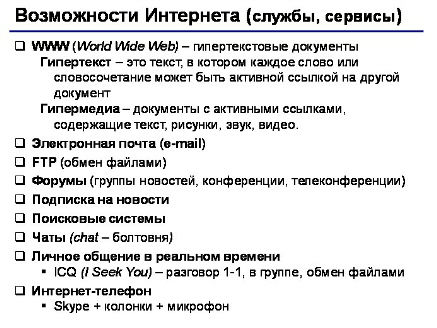 |
Задание 11. Приведите по несколько примеров работы в разных режимах, используя сервисы сети
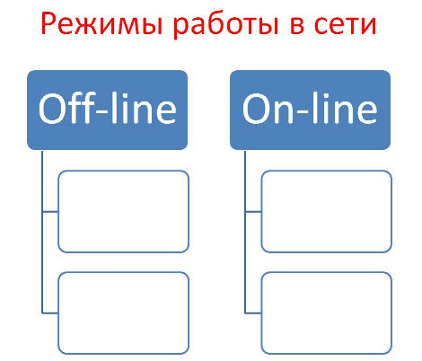
Задание 12. Оформите конспект по получившейся презентации
Задание 13. Примите информацию к сведению
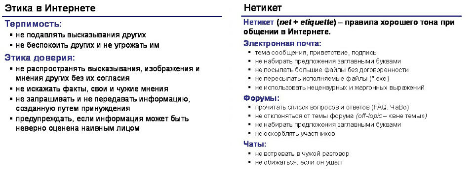
Задание 14. Выполните ТЕСТ Сети
Задание 15. Домашнее задание: Закрепить пройденный материал, посмотрев видео
Локальные компьютерные сети.mp4
Результаты работы (конспект + презентация) покажите преподавателю
Бонус
Невидимый интернет
Invisible web или i2p – название источников, недоступных для привычных поисковых систем.